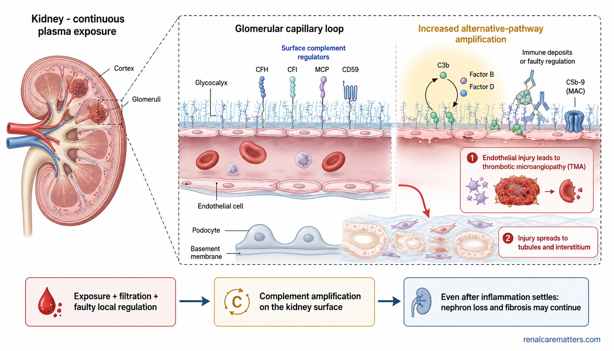
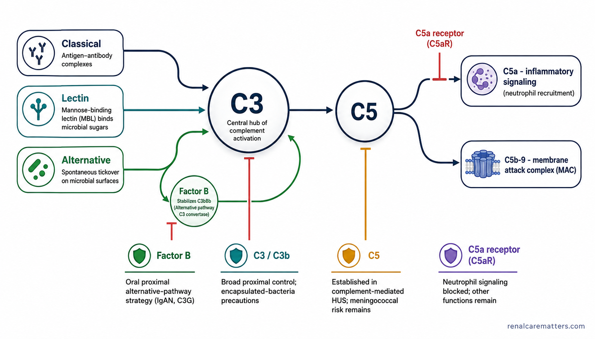

Complement, kidneys, and the medicines that block itAng complement, ang bato, at ang mga gamot na humaharang ditoAng complement, ang kidney, ug ang mga tambal nga mag-block niiniIng complement, ing bato, at reng gamot a mumipat kaniti
Complement is part of your immune system — a fast-acting network of blood proteins that marks germs and damaged cells for removal. In some kidney diseases this network becomes overactive and starts injuring your own kidney instead of only fighting infection. A new group of medicines, called complement inhibitors, can switch part of that network down. They are powerful and precise, but they also lower one of your body's natural defenses — so they must be used carefully, only for the right diagnosis, and always with an infection-prevention plan.
A rapid immune-defense networkMabilis na depensa ng katawanPaspas nga depensa sa lawasMabilis a depensa ning katawan
Blood proteins that mark and help remove threats.Mga protina sa dugo na nagmamarka at tumutulong mag-alis ng banta.Mga protina sa dugo nga mag-marka ug motabang wagtang sa hulga.Reng protina king daya a mumarka at saupan lang alisan reng banta.
Overactivation inflames the filterSobrang aktibo, namamaga ang salaanSobra ka aktibo, mohubag ang salaanSobra a aktibo, mamaga ing salakan
Dysregulated activity inflames the glomerulus and damages blood-vessel lining.Kapag di-kontrolado, namamaga ang glomerulus at nasisira ang lining ng ugat.Kon dili kontrolado, mohubag ang glomerulus ug madaot ang lining sa ugat.Nung ali kontrolado, mamaga ing glomerulus at sisiran ing lapis ning ugat.
The same shield protects youAng parehong kalasag ang nagtatanggolAng samang taming nga nanalipodIng kaparehung kalasag ing mananggul
The pathway that causes injury also defends against infection.Ang parehong sistema ay depensa rin laban sa impeksyon.Ang samang sistema depensa usab batok sa impeksyon.Ing kaparehung sistema depensa ya naman king impeksyon.
Confirm, then match to evidenceTiyakin, saka itugma sa ebidensyaSiguruha, dayon itugma sa ebidensyaTiyakan, kaibat itugma king ebidensya
Confirm the exact disease mechanism, then match it to evidence and infection safety.Tiyakin muna ang eksaktong sakit, saka itugma sa ebidensya at kaligtasan.Siguruha una ang eksaktong sakit, dayon itugma sa ebidensya ug kaluwasan.Tiyakan mumuna ing eksaktu a sakit, kaibat itugma king ebidensya at kaligtasan.
The one idea to rememberAng isang ideyang tatandaanAng usa ka ideya nga hinumdomanIng metung a ideya a tandanan
"Complement present" is not the same as "complement-driven," and "complement-driven" is not automatically the same as "approved for a complement inhibitor." Three separate questions — and the right medicine depends on all three.Ang "may complement" ay hindi katulad ng "complement ang sanhi," at ang "complement ang sanhi" ay hindi awtomatikong katulad ng "may aprubadong gamot na complement inhibitor." Tatlong magkaibang tanong — at ang tamang gamot ay nakadepende sa lahat ng tatlo.Ang "naay complement" dili parehas sa "complement ang hinungdan," ug ang "complement ang hinungdan" dili awtomatikong parehas sa "naay aprobadong complement inhibitor." Tulo ka lahi nga pangutana — ug ang saktong tambal nagsalig sa tanan.Ing "atin complement" ali ya kaparehu ning "complement ing sangkan," at ing "complement ing sangkan" ali ya awtomatiku a kaparehu ning "atin aprubadu a complement inhibitor." Atlung mirinan a kutang — at ing tamu a gamot mengailangan na king sablan.
Why kidneys are vulnerable to complement injuryBakit madaling masira ang bato dahil sa complementNganong dali madaot ang kidney tungod sa complementBakit malagua a sirian ing bato uli ning complement

The kidney's filters (glomeruli) are bathed in plasma, so complement proteins pass over them constantly; when the local "brakes" fail, injury amplifies and spreads into the tubules and small blood vessels — the injury pattern called thrombotic microangiopathy (TMA).
- MAC
- Membrane attack complex — the final complement structure that punches holes in cell membranes.
- TMA
- Thrombotic microangiopathy — clot-and-injury damage to the smallest blood vessels.
The kidney's filtering units, the glomeruli, are continuously washed by plasma — so the complement proteins circulating in blood are always in contact with them. Normally, a set of surface "regulators" keeps complement from switching on where it shouldn't. When immune deposits collect, or when those regulators are faulty, the filter's surface becomes a place where complement amplifies — a small signal becomes a large one. That amplification can inflame the glomerulus and injure the delicate lining of small blood vessels, which is the core of thrombotic microangiopathy (TMA).
Two honest cautions. First, the kidney is not vulnerable for a single tidy reason; it is a convergence of constant exposure, high filtration, a special local environment, and the balance of on/off regulators. Second, complement's effects are not limited to the glomerulus — they reach the tubules, the deeper medulla, transplanted kidney tissue, and the microvasculature. Importantly, even after the active inflammation settles, scarring and the loss of working filter units can continue. That is why timing and diagnosis matter so much.
A low C3 or "C3 on the biopsy" is a clue — not a diagnosis, and not a prescriptionAng mababang C3 o "C3 sa biopsy" ay palatandaan lang — hindi diyagnosis, hindi resetaAng ubos nga C3 o "C3 sa biopsy" timailhan lang — dili diagnosis, dili resetaIng mababa a C3 o "C3 king biopsy" tanda ya mu — ali diagnosis, ali reseta
Many patients are told their C3 blood level is low, or that "C3 showed up" on their kidney biopsy, and understandably ask whether that means they need a complement inhibitor. The honest answer is: not by itself. A low C3 can happen in several different diseases and sometimes in none of the ones these drugs treat. C3 staining on a biopsy shows complement is involved, but it does not, on its own, prove that blocking complement will help you.
What a single result can and cannot sayAng kaya at hindi kaya sabihin ng isang resultaAng kaya ug dili kaya isulti sa usa ka resultaIng kayang at eng kayang sabyan ning metung a resulta
A low C3, C3 staining, or even a positive complement gene test — each alone — cannot select your diagnosis or your drug. Your team combines the full clinical picture, the biopsy read under three microscopes, and a search for other causes. Just as important: a normal C3 or a negative gene panel does not rule out a complement-mediated disease. This is exactly why expert review matters.Ang mababang C3, C3 staining, o kahit positibong gene test — mag-isa — ay hindi makakapili ng diyagnosis o gamot. Pinagsasama ng iyong doktor ang buong larawan, ang biopsy sa tatlong mikroskopyo, at paghahanap ng ibang sanhi. Mahalaga rin: ang normal na C3 o negatibong gene test ay hindi nag-aalis ng sakit na dulot ng complement.Ang ubos nga C3, C3 staining, o bisan positibo nga gene test — nga mag-inusara — dili makapili sa diagnosis o tambal. Gitapok sa imong doktor ang tibuok hulagway, ang biopsy sa tulo ka mikroskopyo, ug pagpangita sa laing hinungdan. Importante usab: ang normal nga C3 o negatibo nga gene test dili mag-exclude sa sakit tungod sa complement.Ing mababa a C3, C3 staining, o agyang positibu a gene test — bukud-bukud — ali na kayang piliin ing diagnosis o gamot. Pisasamaan ning doktor mu ing mabilug a lawe, ing biopsy king atlung mikroskopyu, at ing panintun aliwang sangkan. Importanti mu naman: ing normal a C3 o negatibu a gene test ali na aalisan ing sakit a mibut king complement.
Before the first dose: your infection-safety planBago ang unang dosis: ang plano mo laban sa impeksyonSa wala pa ang unang dose: ang plano batok sa impeksyonBayu ing mumunang dosis: ing plano mu king impeksyon
Because these medicines lower part of your defense against certain bacteria, an infection-prevention plan is not optional — it is part of the treatment. The most important risk is meningococcal disease, a bloodstream and brain-lining infection that can become life-threatening within hours. The U.S. Centers for Disease Control and Prevention (CDC) estimates the risk on complement blockade is raised by up to about 2,000 times compared with healthy people. Vaccination lowers this risk substantially, but — this is the crucial part — it does not remove it. Disease can still occur, including from strains the vaccine does not cover.
- Vaccines reviewed and up to date — meningococcal (both MenACWY and MenB), and, for some drugs, pneumococcal and Haemophilus influenzae type b (Hib). Your team confirms which you need and when boosters are due.Nasuri at updated ang mga bakuna — meningococcal (MenACWY at MenB), at para sa ilang gamot, pneumococcal at Hib. Kumpirmahin ng doktor kung alin ang kailangan at kailan ang booster.Na-review ug updated ang mga bakuna — meningococcal (MenACWY ug MenB), ug para sa pipila ka tambal, pneumococcal ug Hib. Kumpirmahon sa doktor kon unsa ang gikinahanglan.Mereview at updated la reng bakuna — meningococcal (MenACWY at MenB), at para king mapilan a gamot, pneumococcal at Hib. Kumpirmahan ning doktor nung nanu ing kailangan.
- You carry an emergency safety card that tells any emergency team you are on a complement inhibitor, so they treat a possible infection immediately.May dalang emergency safety card na nagsasabing gumagamit ka ng complement inhibitor, para agad kang gamutin.Nagdala ka ug emergency safety card nga nag-ingon nga naggamit kag complement inhibitor, aron dayon ka tambalan.Atin kang dalang emergency safety card a maglagpa a gagamit kang complement inhibitor, ba ra kang agad lunasan.
- You know the emergency symptoms — fever, severe headache, stiff neck, sensitivity to light, confusion, a fast-spreading rash, severe muscle pain, belly symptoms, or any sudden decline — and you go to the emergency room immediately, even if you were vaccinated.Alam mo ang emergency na sintomas — lagnat, matinding sakit ng ulo, matigas na leeg, sensitibo sa liwanag, pagkalito, mabilis na pantal, matinding pananakit ng kalamnan, o biglaang paglala — at agad pumunta sa emergency, kahit nabakunahan.Nahibalo ka sa emergency nga sintomas — hilanat, grabe nga labad sa ulo, gahi nga liog, sensitibo sa suga, kalibog, paspas nga rash, grabe nga kasakit sa kaunuran — ug dayon adto sa emergency, bisan nabakunahan.Balu mu reng emergency a sintomas — pilan, masakit a buntuk, matigas a batal, sensitibo king sala, kalinguan, mabilis a rash, masakit a laman — at agad kang munta king emergency, agyang mebakunan ka.
- The plan is written down — including whether a preventive antibiotic will be used (a decision only your treating team can make and document; this page never names a drug or dose).Nakasulat ang plano — kasama kung gagamit ba ng pang-iwas na antibiotic (desisyon lang ito ng iyong doktor; hindi nagbibigay ng pangalan o dosis ang pahinang ito).Nasulat ang plano — apil kon mogamit bag preventive antibiotic (desisyon lang kini sa imong doktor; wala kining ihatag nga ngalan o dose).Mesulat ing plano — kayabe nung gamit lang preventive antibiotic (desisyon ne mu ning doktor mu; ali ne magdinan lagyu o dosis ining pisamban).
Keep taking your medicine and your prevention plan exactly as prescribed. Do not stop either one on your own. If access is ever interrupted, tell your nephrologist right away so a backup plan can be arranged.Ipagpatuloy ang gamot at ang plano ayon sa reseta. Huwag ihinto ang alinman nang mag-isa. Kung maputol ang supply, agad sabihin sa doktor.Padayon sa tambal ug sa plano sumala sa reseta. Ayaw hunonga ang bisan asa nga mag-inusara. Kon maputol ang supply, dayon sultihi ang doktor.Ituloy me ing gamot at ing plano agpang king reseta. E me tuknangan ing nanu man a bukud-bukud. Nung mapatId ing supply, agad me sabyan king doktor.
How will we know whether treatment is working?Paano malalaman kung gumagana ang gamot?Unsaon nato mahibaw-an kon molihok ang tambal?Makananu tamu abalu nung gagana ing gamot?
Different diseases are followed with different measurements, but a good rule is that no single number tells the whole story. Your team watches several layers together: how you feel and function day to day; your kidney numbers (creatinine and estimated GFR); the amount of protein in your urine; and, in the clotting-type diseases, blood counts such as platelets and markers of red-cell breakdown. A complement blood test may show the drug is engaging its target, but that is not the same as proving your kidney is protected over the long run.
Be a little cautious with quick wins. Less protein in the urine is encouraging, but it does not automatically prove that kidney failure has been prevented. Early kidney-number changes can reflect fluid shifts or recovery rather than the true long-term trend. That is why we track the direction over months, not the reading on any one day. Ask your team plainly: "What change in my protein, kidney number, platelets, or symptoms would count as a real response — and over what time?"
Your one-page action planAng iyong isang-pahinang planoAng imong usa ka pahina nga planoIng metung a pisamban a plano mu
- Know the exact diagnosis written on your biopsy report or discharge summary — bring a copy to every review.Alamin ang eksaktong diyagnosis sa iyong biopsy o discharge summary — magdala ng kopya sa bawat konsulta.Hibaloi ang eksaktong diagnosis sa imong biopsy o discharge summary — pagdala ug kopya kada review.Balu me ing eksaktu a diagnosis king biopsy o discharge summary mu — magdala kang kopya kada konsulta.
- Ask whether complement is the driver of your disease or just one contributor.Itanong kung ang complement ba ang pangunahing sanhi o isa lang sa mga dahilan.Pangutana kon ang complement ba ang nag-una nga hinungdan o usa lang sa mga hinungdan.Kutnang me nung ing complement ing pekamaragul a sangkan o metung ya mu karin.
- Ask how strong the evidence is for the proposed drug for your exact diagnosis, age group, and jurisdiction.Itanong kung gaano kalakas ang ebidensya para sa gamot sa iyong eksaktong diyagnosis, edad, at bansa.Pangutana kon unsa ka kusog ang ebidensya para sa tambal sa imong eksaktong diagnosis, edad, ug nasod.Kutnang me nung makananu kasikan ing ebidensya para king gamot king eksaktu mung diagnosis, edad, at bansa.
- Bring your vaccine records and current medicines, and keep your emergency card with you.Dalhin ang rekord ng bakuna at kasalukuyang gamot, at laging may emergency card.Pagdala sa rekord sa bakuna ug kasamtangang tambal, ug bitbita ang emergency card.Dalan me ing rekord ning bakuna at gamot mu, at atin kang emergency card.
- Seek emergency care for possible severe infection symptoms — even if you are vaccinated or taking prevention.Pumunta sa emergency kung may sintomas ng malubhang impeksyon — kahit nabakunahan.Adto sa emergency kon adunay sintomas sa grabe nga impeksyon — bisan nabakunahan.Munta kang emergency nung atin sintomas na grabe a impeksyon — agyang mebakunan ka.
- Do not stop treatment or prevention without your specialist's plan, and ask what happens if access is interrupted.Huwag ihinto ang gamot o pag-iwas nang walang plano ng espesyalista, at itanong kung ano ang gagawin kung maputol ang supply.Ayaw hunonga ang tambal o pag-amping nga walay plano sa espesyalista, ug pangutana kon unsa kon maputol ang supply.E me tuknangan ing gamot o pamiwas nung ala plano ning espesyalista, at kutnang me nung nanu nung mapatId ing supply.
- Ask when a second opinion or expert-center review is appropriate — these are rare diseases, and expert input is a strength, not a failure.Itanong kung kailan angkop ang second opinion o expert center — bihira ang mga sakit na ito.Pangutana kon kanus-a angay ang second opinion o expert center — talagsaon kini nga mga sakit.Kutnang me nung kapilan angkup ing second opinion o expert center — malagad la reng sakit a deni.
Access and cost in the Philippines — an honest pictureAccess at gastos sa Pilipinas — tapat na larawanAccess ug gasto sa Pilipinas — matinud-anong hulagwayAccess at gastu king Pilipinas — tune a lawe
These are high-cost, rare-disease medicines, and access in the Philippines cannot be assumed from what is approved abroad. A drug approved in the United States is not automatically approved, available, or reimbursed here. Local marketing authorization is decided by the Philippine Food and Drug Administration (Philippine FDA), and coverage by the Philippine Health Insurance Corporation (PhilHealth) is a separate question again.
The Philippine Rare Diseases Act (Republic Act No. 10747) creates a policy framework for rare diseases, but the law by itself is not proof that a specific drug, test, or vaccine is covered or immediately available. The practical path is a multidisciplinary expert center — nephrology working with hematology, renal pathology, infectious disease, and, where relevant, genetics, transplant, and maternal-fetal medicine — which can verify what is truly available, arrange laboratory send-outs, and discuss special-access or compassionate-use pathways where they exist. Ask your team to verify each item rather than assume it.
Questions patients askMga tanong ng pasyenteMga pangutana sa pasyenteReng kutang ding pasyente
The complement cascade — without the memorization burden

Classical, lectin, and alternative pathways converge on C3; the alternative pathway amplifies through factor B; C5 then splits into C5a inflammatory signaling and the C5b-9 membrane attack complex. Four restrained bars mark where drugs block: factor B, C3/C3b, C5a receptor (C5aR), and C5.
- MAC
- Membrane attack complex (C5b-9).
- C5aR
- C5a receptor.
- IF
- Immunofluorescence.
Teach the cascade in four layers rather than as a memorized diagram. Entry: the classical, lectin, and alternative pathways each initiate activation. Amplification: the C3 convertase and the alternative-pathway feedback loop turn a small signal into a large one. Inflammatory signaling: the anaphylatoxins C3a and C5a recruit and activate neutrophils. Terminal injury: C5b-9, the membrane attack complex (MAC), damages membranes directly. The single organizing idea for therapeutics is simple: where a drug blocks determines what remains active.
| Target level | What is reduced | What may remain | Clinical meaning |
|---|---|---|---|
| C5 | C5a generation and terminal C5b-9 (MAC) formation | Proximal C3 activation and opsonization | Established role in complement-mediated hemolytic uremic syndrome (HUS); substantial meningococcal risk remains |
| C5a receptor (C5aR1) | C5a-driven neutrophil inflammatory signaling | Other complement functions, including terminal-complex formation | Mechanistically attractive in antineutrophil cytoplasmic antibody (ANCA)–associated vasculitis (AAV); avacopan evidence and regulatory status now unsettled |
| C3 / C3b | Central convergence and amplification | Little downstream complement activity | Broad proximal control; serious encapsulated-bacterial precautions |
| Factor B | Alternative-pathway amplification | Classical/lectin initiation and some non-alternative activity | Oral proximal alternative-pathway strategy in IgAN and C3G indications |
One caution the table cannot hold: pharmacology, tissue penetration, dose exposure, adherence, half-life, and route all matter. Two drugs aimed near the same cascade level are not clinically interchangeable.
Is complement the driver, an amplifier, a clue, or a bystander?
Before selecting where to block, place the disease on an evidence spectrum. The spectrum resists the most common error in this field — treating detection as indication.
Complement is central
Dysregulation is core to the disease construct; strongest mechanistic fit.
- Complement-mediated HUS / aHUS (atypical hemolytic uremic syndrome)
- C3 glomerulopathy (C3G)
Upstream disease, complement amplifies
An upstream immune process initiates injury; complement materially amplifies tissue inflammation.
- Primary immune-complex membranoproliferative glomerulonephritis (IC-MPGN)
- Primary IgAN at risk of progression
- AAV (historically approved setting — see avacopan alert)
Detected, targetability unproven
Complement is present in tissue or blood, but that it can be usefully targeted is not established.
- Lupus nephritis, membranous nephropathy
- Infection-related glomerulonephritis (GN)
Association only
Evidence is preclinical, observational, inconsistent, or not linked to treatment response.
- Focal segmental glomerulosclerosis (FSGS), diabetic kidney disease (DKD), acute kidney injury (AKI)
- Transplant-associated TMA / antibody-mediated injury
Red line
Do not move a disease from "association" to "treatable target" because complement components appear in tissue or blood. Presence is not indication.
Suspected TMA / complement-mediated HUS: the urgent pathway
Thrombotic microangiopathy (TMA) is a clinical emergency in which delay costs nephrons and lives. This section emphasizes urgency without inventing a diagnostic score. Suspect TMA with an appropriate combination of thrombocytopenia or a falling platelet count; microangiopathic hemolysis (schistocytes, high lactate dehydrogenase [LDH], low haptoglobin, indirect hyperbilirubinemia, reticulocytosis); and acute kidney injury (AKI) or other organ injury (neurologic, cardiac, gastrointestinal, or pregnancy-related). Absence of the full hematologic triad does not exclude renal-limited TMA.
Biopsy pathway: C3G and primary IC-MPGN
Membranoproliferative glomerulonephritis (MPGN) is a pattern, not a single disease. C3 glomerulopathy (C3G) requires clinicopathologic integration of light microscopy (LM), immunofluorescence (IF), and electron microscopy (EM). A commonly used working definition of C3 dominance is C3 staining at least two orders of intensity stronger than any other immune reactant — a screening framework, not a stand-alone molecular diagnosis. Dense deposit disease (DDD) and C3 glomerulonephritis (C3GN) are ultrastructural subtypes within C3G. C3 dominance can also occur in infection-related GN and may evolve over time, and routine frozen IF can miss masked monoclonal immunoglobulin deposits — paraffin IF or other techniques may be needed. Evaluate for infection, autoimmune disease, cryoglobulinemia, hepatitis, and monoclonal gammopathy/clonal disease as appropriate. Both histologic activity and chronicity must be reported; fibrosis modifies expected reversibility but does not alone dictate a universal treatment decision.
Disease-to-target evidence map (as of 9 Aug 2026)
| Disease setting | Complement role | Targeted-therapy evidence | Regulatory framing | Major unresolved question |
|---|---|---|---|---|
| Complement-mediated HUS / aHUS | Primary driver in a major subset; endothelial TMA phenotype | Prospective, largely nonrandomized Eculizumab and ravulizumab (C5) supported by prospective open-label studies and long-term experience | C5 inhibitors have established US indications; verify local label | Diagnosis under uncertainty; duration and safe withdrawal |
| C3G | Primary alternative-pathway dysregulation | Randomized phase 3 Pegcetacoplan (C3/C3b); iptacopan (factor B) C3G program | US indications exist with age and endpoint differences | Best first agent, long-term kidney survival, sequencing, repeat biopsy |
| Primary IC-MPGN | Complement may be a major driver after secondary causes excluded | Randomized phase 3 Pegcetacoplan VALIANT population included primary IC-MPGN | US pegcetacoplan indication age ≥12 to reduce proteinuria | Definition of "primary"; clonal/immune drivers; long-term benefit |
| Primary IgAN at risk of progression | Alternative pathway amplifies immune-complex inflammation | Randomized phase 3 Iptacopan — proteinuria + 24-month eGFR-slope benefit (APPLAUSE-IgAN) | July 2026 US traditional approval: slows kidney-function decline | Which patient should receive which disease-specific drug or combination |
| Severe active granulomatosis with polyangiitis (GPA) / microscopic polyangiitis (MPA), i.e. AAV | C5a–C5aR signaling amplifies neutrophil injury | Retracted / contested ADVOCATE retracted; FDA proposed withdrawal + serious DILI reported | Status unresolved; on US market pending final process at cut-off | Whether any valid benefit remains; how regulators resolve the record |
| Lupus nephritis, membranous, FSGS, DKD, AKI, transplant complement injury | Variable amplifier / association | Mechanistic / investigational Mechanistic, observational, or investigational by disease | Do not imply an approved kidney indication | Biomarker-selected trials and clinical endpoints |
Every regulatory cell is jurisdiction-specific and time-stamped. Last verified 9 Aug 2026 against US FDA labels and safety communications; Philippine status is not inferred from US or EU status and must be confirmed against the Philippine FDA verification database before any local claim. Regulatory records older than 90 days should read "verification due."
Choosing where to block — a benefit–risk matrix, not a product ranking
Frame selection as clinical questions, not a leaderboard: Is disease initiation upstream in adaptive immunity, or is complement dysregulation itself sufficient to sustain injury? Is rapid suppression needed while an upstream therapy takes effect? Is alternative-pathway amplification the intended target? Is terminal blockade sufficient, or does proximal C3 activity remain pathogenic? What host-defense functions are sacrificed? Is the route compatible with adherence, travel, dialysis, and pregnancy planning? Is there pharmacodynamic evidence of adequate blockade, and does the trial population match this patient's age, eGFR, proteinuria, transplant status, pathology, and prior therapy? No ranking algorithm should claim one approved agent is "best."
What actually counts as response?
Use an outcome hierarchy and resist collapsing its layers. From most to least patient-important: (1) patient-important outcomes — survival, avoidance of kidney failure/dialysis, organ recovery, serious infection, quality of life; (2) kidney-function outcomes — measured or estimated GFR trajectory and sustained-decline thresholds; (3) disease-activity outcomes — proteinuria, hematuria, hematologic TMA normalization, blood pressure, complement markers; (4) tissue outcomes — C3 deposit clearance, active-lesion improvement, chronicity progression; and (5) pharmacodynamic outcomes — pathway-blockade assays.
- Proteinuria is a useful risk and response marker, but mechanisms that lower it are not equivalent, and reduction does not automatically prove long-term prevention of kidney failure.
- Early eGFR changes can reflect hemodynamics, active injury, recovery, or measurement variability.
- Platelet/LDH recovery in TMA does not prove that relapse risk is gone.
- Complement-biomarker normalization may show target engagement but is not automatically a validated surrogate for long-term kidney survival.
- Repeat biopsy can answer a specific mechanistic question but is not routine for every patient.
Infection prevention before the first dose
This is a core safety module, not a sidebar. Complement inhibition substantially increases meningococcal disease risk — the CDC describes risk up to approximately 2,000-fold versus otherwise healthy people. Recommended vaccination reduces but does not eliminate risk, and disease can occur from nongroupable strains not covered by standard serogroups. Antimicrobial prophylaxis may be considered, but protection is incomplete and resistance/adverse effects matter. Proximal inhibitors may also raise risk from other encapsulated organisms — follow the current product label and local immunization guidance. This page never generates an antibiotic name or dose.
Monitoring after treatment starts — and when to stop
Build monitoring around disease, drug, and safety — not one generic schedule. Universal domains: symptoms and patient-reported function; infection symptoms and adherence to the prevention plan; complete blood count (CBC), creatinine/eGFR, urinalysis and proteinuria as disease-appropriate; hemolysis/TMA markers when relevant; liver, blood pressure, or other drug-specific monitoring per the current label (note the intensive liver-panel schedule that applied to avacopan); vaccination boosters and prophylaxis review; infusion/injection reactions and adherence; pregnancy status/plans; access interruptions and missed-dose contingency; and drug-specific pharmacodynamic assays when available and validated.
| Response state | What it means / next step |
|---|---|
| Early Improving, too early for durability | Encouraging trend; do not declare success. Continue plan and horizon. |
| Engaged Target engagement, clinical response uncertain | Pharmacodynamic blockade present but clinical benefit not yet demonstrated. |
| Partial Partial clinical response | Reassess dose/adherence/competing injury; set next decision point. |
| No response No satisfactory response | Recheck diagnosis, chronicity, adherence, exposure, target, and competing injury. |
| Safety Safety signal | Urgent clinician action (e.g., infection, DILI signal). |
| Relapse Relapse suspected | Re-engage surveillance/rapid-reinitiation plan; involve expert center. |
Duration, withdrawal, relapse, re-treatment
State explicitly that there is no universal duration rule across diseases or agents. For complement-mediated HUS, relapse risk after C5-inhibitor withdrawal is heterogeneous; pathogenic complement variants, prior relapses, transplant status, pregnancy triggers, severity of prior organ injury, and the ability to monitor and re-treat rapidly all modify the decision. Absence of an identified variant may lower relapse risk in some cohorts but does not create a universal "safe to stop" rule — withdrawal requires a written surveillance and rapid-reinitiation plan. For C3G/primary IC-MPGN and IgAN, long-term duration, sequencing, combination therapy, and treatment-free remission remain active research questions.
Special situations — expert co-management required
Handle each with an expert-center banner, never a generic pathway: children and adolescents; pregnancy, postpartum TMA, and breastfeeding; kidney transplantation and recurrent C3G/IC-MPGN or complement-mediated HUS; dialysis-dependent AKI with possible recovery; advanced chronicity/fibrosis; active serious infection; liver disease (especially for any avacopan discussion); monoclonal gammopathy or suspected clonal disease; resource-limited settings and interrupted access; and transition from pediatric to adult care.
Philippine clinical-practice and access pathway
Localize the workflow without pretending high-cost rare-disease care is uniformly available. Use a tiered diagnostic model, and treat the Philippine FDA verification database as the authority for local marketing authorization — never infer it from US FDA or EMA status.
Localization rules to publish only when verified: maintain fields for Philippine availability, distributor/import pathway, compassionate/special access, vaccine availability, laboratory send-out options, and expected turnaround — but publish only verified data. The Rare Diseases Act (RA 10747) is a policy framework, not proof that a specific drug, test, or vaccine is covered or immediately accessible. Do not promise PhilHealth coverage; link only to a verified current package or circular when one exists. Provide a generic multidisciplinary-center referral model — nephrology, hematology, renal pathology, infectious disease, clinical genetics, transplant, and maternal-fetal medicine as relevant — and build any referral directory only after institutions consent and details are verified.
What remains unknown
This section mirrors the 2026 Kidney Disease: Improving Global Outcomes (KDIGO) conference agenda and is deliberately distinct from recommendations. These are open questions, not guidance:
- Optimal nomenclature and classification of complement-mediated TMA.
- Minimum versus ideal diagnostic testing.
- Validated complement biomarkers for diagnosis, prognosis, treatment selection, and monitoring.
- Role of AI or multivariable models in rare-disease classification.
- Optimal duration and safe withdrawal of C5 inhibition.
- First-line choice between proximal inhibitors in C3G/IC-MPGN.
- Whether switching, sequencing, or combining inhibitors improves outcomes.
- Role of background immunosuppression.
- Place of repeat biopsy and tissue C3 clearance.
- Treatment of transplant recurrence.
- Complement activity beyond the glomerulus (tubulointerstitial injury).
- Cost-effectiveness and equitable global access.
- Patient-preference tradeoffs (route, frequency, uncertainty, infection risk, travel).
The future is not simply "more complement inhibition." It is better recognition of who has complement-driven disease, better matching of target to mechanism, and safer delivery of treatment in the real world.